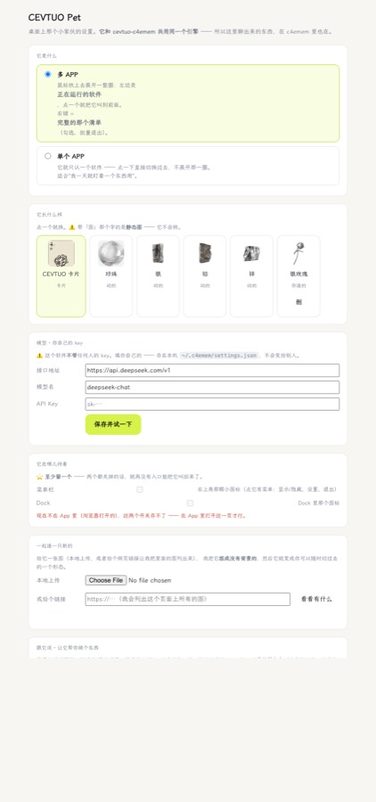

桌面宠物
本地优先
cevtuo-pet — 和 C4emem 共用同一个引擎
macOS 13+
数据不出本机
01 — 它是什么
它一直待在桌面上。鼠标放上去就摊开一圈，左边是你正在运行的软件 —— 点一个就把它叫到最前面， 连找 Dock 那一步都省了。右边是它自己的入口。
展开就是一整圈，按软件名的首字母敲一下就直接切过去 —— 全程不用碰鼠标。
右键 = 完整的那个清单：勾几个、一起退掉。
它就不展开那一圈了，点一下直接切过去。适合"一天就盯着一个东西用"。
两个开关自己挑。至少留一个 —— 两个都关掉就没有入口能把它叫回来了。
给一张图（本地上传，或者一个网页链接），它先抠掉背景，再量出这张图的深浅， 然后重建成一个能转的立体 —— 不是把同一张图叠几层那种"假厚度"。
深度是在本机算的（Depth Anything V2 + three.js，34MB 已经打进包里）， 一次四秒左右，全程不联网、不上传任何东西。
02 — 设置
模式、它长什么样（卡片 / 珍珠 / 银 / 铅 / 锌，还有你自己造的那些）、模型、常驻、一起造一只新的（含老的那只一键「做成 3D」）、跟它说 —— 全在一页里，没有藏在三级菜单后面的东西。

CEVTUO Pet 设置 · 模式 / 形态切换 / 你自己的 API key / 常驻开关 / 造一只新的 / 跟它说
03 — 跟它说
不是"给你一份步骤就完了"。你跟它把"读哪里、做成什么样"聊清楚， 它会给你一份可执行的做法，摊开摆在你面前 —— 按一下，它真去读、真去索引， 然后把读到多少条报给你。
· 读一个本地文件夹 —— 挑一个目录，它把里面的文档索引成一个新来源，之后在搜索里搜得到。
· 读一个网址 —— 抓下来抽成正文进库。
要连一个在线服务、要调一个接口那种，它会明说"这一步现在做不了"， 而不是给你一份看起来很像回事、其实跑不起来的东西。
你在这里聊出来的东西，在 C4emem 里也在。 两个 App 共用同一个本机核心、同一份数据。
04 — 安装
.dmg，打开，把 CEVTUO Pet 拖进「应用程序」。~/.c4emem/settings.json），不会发给别人。